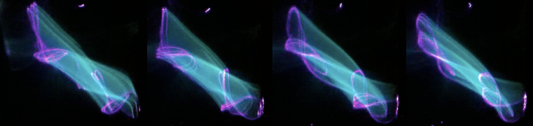

Tensegrity
The realization of "tensegrity" (portmanteau of tensional integrity) occurred via Kenneth Snelson and Buckminster Fuller around 1950. Tensegrity structures are held together by continuous tension and only discontuous compression – no two compression members touch! In short, these things are just plain cool. You really have to put one together and feel the power that holds it together to appreciate it.

Another 30-strut sphere.
A 6-strut icosahedron (though Marc might make the argument for cubeoctahedron).
Tube Theremin

I built this tube theremin in high school for my senior project before I really knew anything about electronics – I found it was a good opportunity to start learning. I never could get the hartley oscillators tuned right, but now that I have a fancy Tek scope, it should be trivial once I get home and find a bit of time.

I owe a lot of credit to Rob Lewis for helping me find parts on the internet and to Mike Tripp for not only helping me through the whole project, but also for discharging those big 400v capacitors on the bottom with his bare hands. Without Mike I would not know the important relationship between high voltage and swear words.
The design is the forbes, see below.
Vertical Axis Wind Turbine

This was Conrad's idea. It was a really fun project, got to do some cool stuff like cut reverse threads on the inside of the main shaft with the lathe. Unfortunately it was one of those projects where it looks cooler than it performs – which is strange because our proof-of-concept prototype performed swimmingly. Perhaps someday I will investigate the fluid dynamics in a little more detail, but at the time I did not have the tools. Above is the design sans airfoil. Below is the final design – we used hobby shrink film and a nylon tube to form the airfoil.

Rock Climbing Wall

This has been one of my favorite projects – though bittersweet due to my departure to New York soon after (almost) completing stage one. Lots of cred to everybody who helped in construction and setting routes, especially Keith Kopp, Harry Hamlin (below), Conrad Wharton, James Tripp, and others I am sure.

Laser Lissajous Projector
I used two mirrors glued to two speaker cones oriented at 90° as the basis for this projection. Each speaker was controlled by a function generator so that a laser could be modulated by a specific combination of two frequencies. I chose a blue laser (λ ≈ 405nm) because it induces fluorescence in many household items, such as the quinine in tonic water (pictured below). I wish I had thought to take a photo of the apparatus at the time, but sadly did not. I also owe thanks to Marc Legros for collaboration on this project as well as many other projects.

Mugshots

I believe the characters in our environment play a large part in how we feel about our environment. With the beard mugs, I wanted to create everyday objects with life and character – things which transcend
inanimacyand in turn inspired a certain livelihood through humor. I have given most of them away so these are the few that remain.
Geodesic Domes

I wouldn't be much of a Buckminster Fuller follower if I hadn't already constructed more than my fair share geodesic domes (with partner in crime, Conrad Wharton). Sadly most of them were commissioned via craigslist and I never got to see them fully assembled. Though at least 3 made it to Vantage for University of Puget Sound's annual ass-kicker. For the record 30' Ø 3V domes and 32' Ø 2V domes were the largest. Pictured is my personal dome I was fortunate enough to put together from scrap pieces (13' Ø)
If you dig through some photos of the GlamCocks, I think you'll spot a smaller 2V dome I constructed atop their dance camp, pretty neat.
Also I have a killer dome excel calculator that calculates the most efficient strut lengths and total price and stuff like that. Hit me up for that if you're interested.